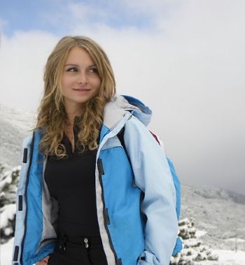
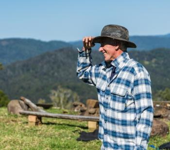

Target Audience
A description of the target audience is English speaking outdoor enthusiests and farmers with a median age of 42 years old and annual household income of $53,350. It is expected that the site will be accessed mostly by mobile devices, while they are enjoying the outdoors or working on the farm, but many will supliment that with computer use while at home.
Personas
Shawna Odekirk
- Occupation: Student
- Education: Working on Bachelor's Degree
- Annual Income: <$10,000
- Age / Family Status: 24 years old / Single
- Social: Enjoys outdoor activities with her friends such as challenging hikes and exploring caves.
- Access weather site: Daily with her iPhone to get weather information to determine how to prepare for school during the week and to plan activities on weekends.
- Quote: I respect nature and know weather can change my plans, but I try to prepare well and change my plans less often!
Patrick Williams
- Occupation: Farmer / Rancher
- Education: Bachelor's Degree in Agricultural Science
- Annual Income: $78,200
- Family Status: 59 years old, married, empty nester.
- Social: Enjoys farming, hunting, and fishing with his family.
- Access weather site: Daily for weather forecasts to know what to expect on the farm. Mainly from his tablet in the morning, but monitors throughout the day from his mobile phone.
- Quote: I love living with technology that makes my life easier than it was for my old man when he was running this farm.
Scenarios
- Will the weather be good for fishing this weekend?
- Is Saturday's weather going to allow a hike to the ice cave?
- What day this week is going to be the best for bailing the hay?
- Where are the highlight desitinations for visitors to the area?
- Is pollen going to aggravate my allergies while I am out?